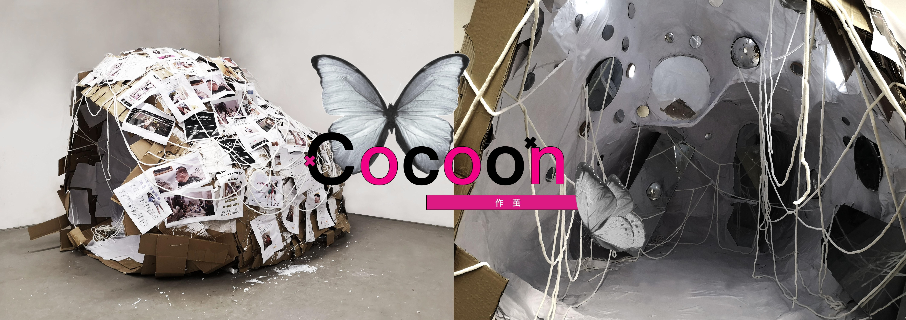
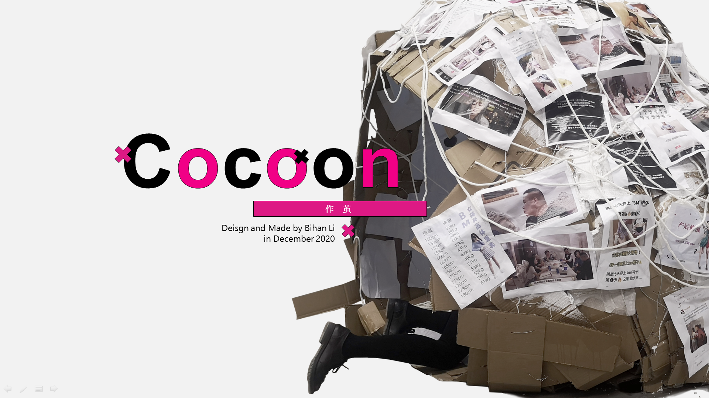
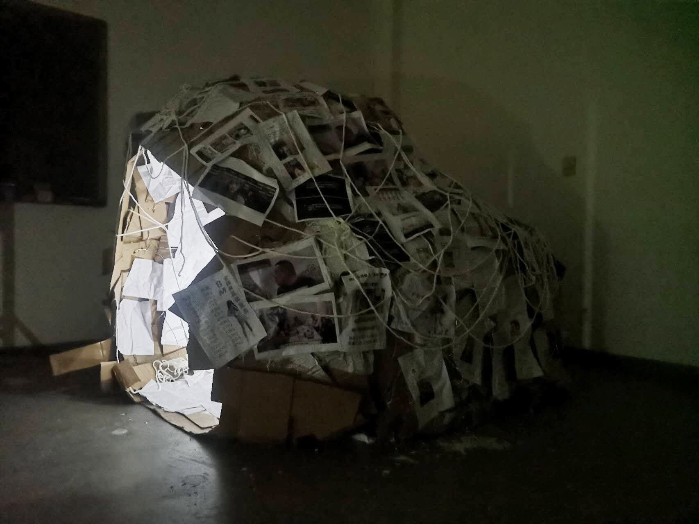

Cocoon
Cocoon is an interactive installation crafted from cardboard, wire, thread, printed paper, motion sensor lights, latex, and various materials. It translates the psychological state of "appearance anxiety" into a captivating spatial experience, magnifying individuals' awareness of this mindset and provoking profound introspection.
  Concept
Construction process